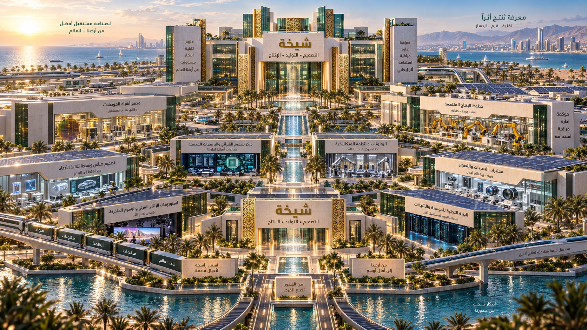

SHEIKHA FOUNDRY FEDERATION
تجمع الفوندريات والمصانع والمزارع

تسلسل تجريبي عام · غير معاير للقطاعاتالمخرجات: حزم تصميم وحصاد افتراضيالطموح الكوني: رؤية وليست تصنيفًا مثبتًا
تكوين التجمع
جارٍ قراءة السجل
طلب تجربة لم تُؤكد نتيجته. إنشاء تجارب أخرى متوقف حتى التحقق.
الإيقاف افتراضي فقط. الزراعة والحصاد هنا خطوات رمزية، وليسا نموذج نمو حيوي أو دليل إنتاج فعلي.
العطل مثبت حتى إعادة ضبط التجربة
المخرجات الافتراضية
سجل الخطوات الأخيرة
حزمة الحالة والأدلة
المحفوظات المحلية
نسخ تاريخية للمراجعة فقط · لا استئناف أو اعتماد إنتاج · الحفظ يدوي
نسخة تاريخية وليست حالة حية. تطابق البصمة ليس توقيعًا موثوقًا أو موافقة هندسية.
النسخة المحفوظة والأدلة
مقارنة نتائج المحاكاة
لم تُقرأ مقارنة لهذه النسخة.
فروق عددية تاريخية فقط · لا إثبات كفاءة أو سببية أو اعتماد إنتاج
بيانات تقرير المقارنة
المراجعة التصورية
ملاحظات محلية · هوية المراجع غير متحققة · دون اعتماد تصنيع أو نشر
حالة مراجعة المخرجات
سجل القرارات والملاحظات
بيانات سجل المراجعة
تجربة تعديل التكوين
مقترح غير مثبت · يبدأ من الصفر · لا توريث للمراجعات أو اعتمادات الإنتاج